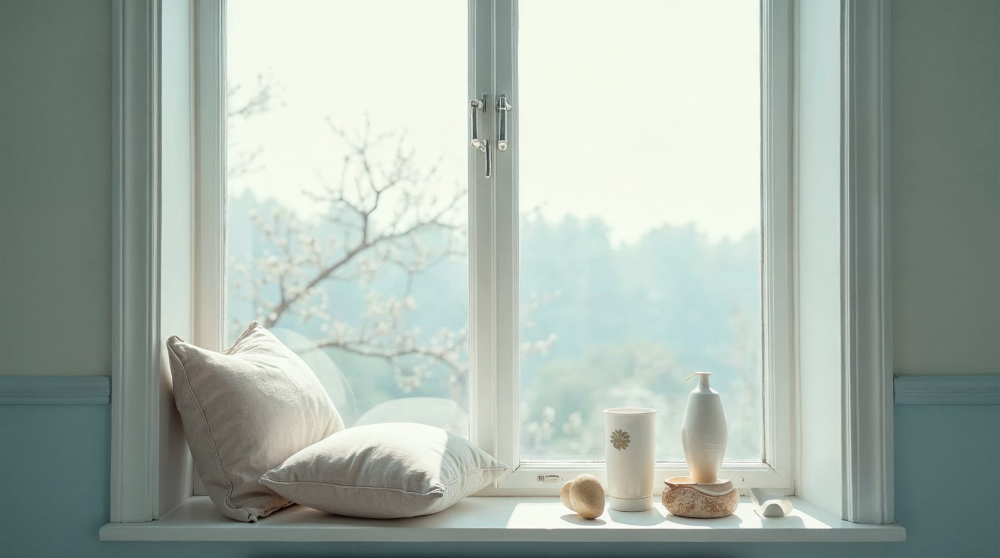
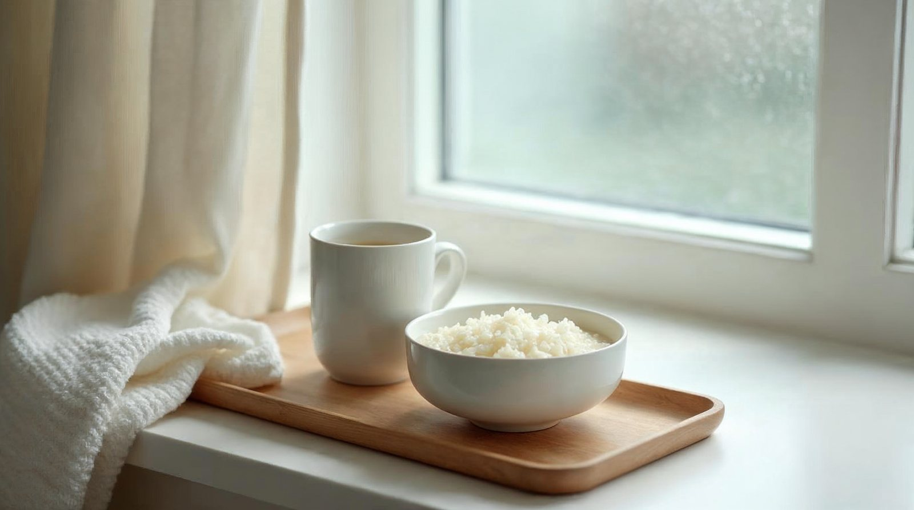
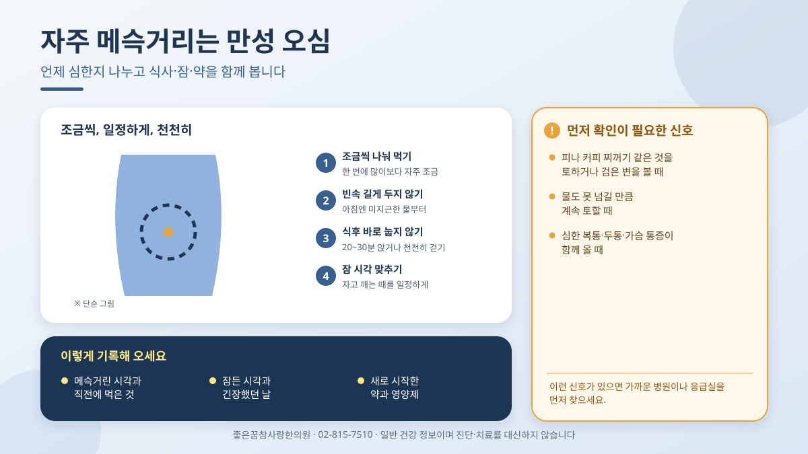

이종호 한의사 감수좋은꿈참사랑한의원 대표원장 (한의사 면허번호 19769)발행 2026-11-26 · 수정 2026-11-26
이 글의 차례
아침 출근길 지하철 안에서 손잡이를 잡고 서 있는데, 속이 스멀스멀 올라오는 느낌이 듭니다. 토할 것 같지는 않은데 입안에 침이 고이고 명치 아래가 울렁입니다. 회사에 도착해 따뜻한 물을 한 잔 마시면 조금 가라앉았다가, 점심 무렵 다시 시작됩니다.
진료실에서 "체한 것도 아닌데 속이 계속 메슥거려요"라는 말씀을 자주 듣습니다. 내시경에서도 큰 이상이 없다는 말을 들었는데 울렁임은 그대로이니 답답하실 수밖에 없습니다. 식사를 제대로 못 하니 기운도 빠지고, 사람 많은 곳에 가는 일조차 부담이 되기도 합니다.
메슥거림은 그 자체로 하나의 병 이름이라기보다 몸이 보내는 신호에 가깝습니다. 위가 음식을 아래로 내려보내는 속도, 자율신경의 긴장, 잠의 질, 드시는 약, 귀 안쪽의 균형 감각까지 여러 갈래가 이 느낌을 만들 수 있습니다. 그래서 어느 갈래가 큰지 함께 나눠 보는 것이 첫걸음입니다.
저는 메슥거림을 말씀하시는 분께 "언제 가장 심하세요?"를 제일 먼저 여쭙니다. 빈속일 때인지, 먹고 난 뒤인지, 아침에 눈뜨자마자인지, 긴장한 자리에서인지에 따라 살펴볼 방향이 꽤 달라지기 때문입니다.
메슥거림은 어떤 느낌을 말하나요?
메슥거림, 울렁거림, 니글거림, 속이 뒤집히는 느낌은 사람마다 부르는 말이 다르지만 대개 같은 느낌을 가리킵니다. 토하고 싶은 충동이 명치나 목 쪽으로 올라오는데, 실제로 토하지는 않는 상태입니다. 의학에서는 이것을 오심이라고 부릅니다.
오심이 며칠 이어지다 가라앉는다면 장염이나 과식, 감기 뒤끝처럼 지나가는 원인을 먼저 떠올립니다. 그런데 몇 주, 몇 달씩 이어지거나 잊을 만하면 되풀이된다면 이야기가 달라집니다. 이때는 생활 속에서 반복되는 원인이 있는지 차근차근 살펴야 합니다.
메슥거림을 말씀하실 때 함께 따라오는 느낌도 중요한 단서가 됩니다. 입에 침이 많이 고이는지, 식은땀이 나는지, 머리가 띵하거나 어지러운지, 배가 더부룩한지, 신물이 올라오는지를 함께 여쭙습니다. 같은 메슥거림이라도 짝이 되는 느낌에 따라 갈래가 나뉩니다.
왜 속이 자꾸 메슥거릴까요?
위는 음식을 받아 잘게 부수고, 일정한 속도로 장으로 내려보냅니다. 이 흐름이 느려지면 음식이 위에 오래 머물면서 속이 꽉 찬 느낌과 함께 울렁임이 생기기 쉽습니다. 기름진 음식, 늦은 야식, 과식은 이 속도를 더 늦춥니다.
자율신경의 긴장도 큰 몫을 합니다. 긴장하거나 불안할 때 위의 움직임이 멈칫하고, 목과 명치가 조이는 느낌이 들면서 메슥거림이 올라옵니다. 발표나 시험, 중요한 약속을 앞두고 속이 울렁였던 경험이 있으시다면 이 갈래를 떠올려 보시면 됩니다.
잠이 부족하거나 끼니를 자주 거르는 것도 원인이 됩니다. 빈속이 길어지면 위산이 위벽을 자극해 쓰린 느낌과 함께 메슥거림이 오고, 잠이 모자라면 위의 리듬 자체가 흐트러집니다. 아침에 눈뜨자마자 울렁이는 분 가운데 이런 경우가 적지 않습니다.
드시는 약도 꼭 살펴야 합니다. 철분제, 일부 진통제와 항생제, 당뇨약, 피임약이나 호르몬제처럼 메슥거림을 함께 가져오는 약이 꽤 있습니다. 새로 약을 시작한 시기와 메슥거림이 시작된 시기가 겹친다면 처방한 선생님께 먼저 알려 주세요.
이 밖에도 귀 안쪽 균형 기관의 문제, 편두통, 임신, 갑상선이나 콩팥 같은 몸 전체의 변화가 메슥거림으로 드러나기도 합니다. 그래서 오래가는 메슥거림은 한 가지 원인으로 단정하지 않고 여러 갈래를 함께 놓고 봅니다.
비슷해 보이지만 다른 불편과는 어떻게 다른가요?
속쓰림은 명치가 타는 듯하거나 쓰린 느낌이 중심이고, 메슥거림은 토할 것 같은 울렁임이 중심입니다. 두 가지가 함께 오는 경우도 많지만, 어느 쪽이 더 큰지에 따라 살피는 순서가 달라집니다. 신물이 목까지 올라온다면 역류 쪽을 함께 봅니다.
더부룩함은 배가 차 있고 내려가지 않는 느낌, 메슥거림은 그 내용이 거꾸로 올라오려는 느낌에 가깝습니다. 식사 뒤 더부룩함이 길게 이어지다 울렁임으로 넘어가는 분도 계십니다.
어지럼과 함께 오는 메슥거림은 귀 안쪽의 균형 감각이나 머리 쪽 원인을 먼저 살핍니다. 고개를 돌리거나 누울 때 세상이 빙글 도는 느낌과 함께 울렁인다면 소화기보다 귀 쪽 이야기를 먼저 해 보아야 합니다.
언제 심해지는지에 따라 나눠 보면
빈속에 심해지는 메슥거림은 끼니 사이가 길거나 아침을 거르는 생활과 가까운 경우가 많습니다. 이런 분은 무언가를 조금 먹으면 오히려 울렁임이 가라앉는다고 말씀하십니다. 식사 간격을 일정하게 만드는 것이 먼저입니다.
먹고 난 뒤에 심해지는 메슥거림은 위가 음식을 내려보내는 흐름이 느려진 경우를 먼저 떠올립니다. 기름진 음식이나 밀가루 음식, 많이 먹은 날에 더 심하다면 양과 종류를 조절하는 것부터 시작합니다. 식사 속도가 빠른 분도 이 갈래에 자주 해당합니다.
특정 자리에서만 심해지는 메슥거림도 있습니다. 회의 직전, 차를 타고 이동할 때, 사람 많은 곳에 들어설 때처럼 상황과 맞물려 올라온다면 긴장과 자율신경 쪽을 함께 살핍니다. 이런 분은 주말이나 휴가 때 울렁임이 확연히 줄어드는 경우가 많습니다.
냄새에 유난히 예민해지는 메슥거림도 있습니다. 음식 냄새, 향수, 담배 연기, 엘리베이터 안의 공기에 울렁임이 올라온다면, 몸 전체가 피로하거나 호르몬 변화가 있는 시기인지 함께 살펴봅니다.

계절과 생활에 따라 달라지는 울렁임
여름에는 찬 음료와 에어컨 바람에 배가 차가워지면서 메슥거림이 늘어나는 분이 많습니다. 겨울에는 움직임이 줄고 기름진 음식과 모임이 잦아지면서 위가 무거워지기 쉽습니다. 같은 분이라도 계절에 따라 울렁임의 모양이 달라질 수 있습니다.
교대 근무를 하시거나 야근이 잦은 분은 식사와 잠의 시각이 매일 바뀌면서 위의 리듬도 함께 흔들립니다. 이런 경우에는 완벽한 식단보다, 일어나서 첫 식사까지의 시간과 잠들기 전 마지막 식사 시각을 일정하게 맞추는 것이 더 현실적인 출발점이 됩니다.
메슥거림을 두고 자주 헷갈리는 것
첫째, 속이 울렁이니 아예 굶는 것이 낫다는 생각입니다. 잠시는 편할 수 있지만 빈속이 길어지면 위산이 위벽을 자극해 다음 울렁임이 더 커지기도 합니다. 죽이나 바나나, 크래커처럼 부담이 적은 음식을 조금씩 드시는 편이 속을 덜 자극합니다.
둘째, 소화제를 늘 곁에 두고 습관처럼 드시는 경우입니다. 잠시 도움이 될 수는 있지만, 왜 울렁이는지를 살피지 않은 채 약에만 기대면 원인이 가려질 수 있습니다. 소화제를 자주 찾게 된다면 그 자체를 기록해 두었다가 진료 때 말씀해 주세요.
셋째, 마음의 문제라서 참으면 된다는 생각입니다. 긴장이 울렁임을 키우는 것은 맞지만, 그렇다고 의지로 참아야 하는 일은 아닙니다. 몸의 긴장을 풀어 주는 방법과 리듬을 바로잡는 방법을 함께 찾으면 됩니다.
먼저 이렇게 여쭙니다
처음 오시면 대략 이런 순서로 여쭙니다. 미리 떠올려 오시면 이야기가 수월해집니다.
- 메슥거림은 언제부터, 하루 중 어느 때 가장 심한가요?
- 빈속일 때와 식사 뒤 가운데 어느 쪽이 더 힘드신가요?
- 실제로 토하신 적이 있나요? 있다면 어떤 내용이었나요?
- 어지럼, 두통, 신물, 더부룩함이 함께 오나요?
- 최근 새로 드시기 시작한 약이나 영양제가 있나요?
- 잠드는 시각과 깨는 시각, 식사 시각은 일정한 편인가요?
가임기 여성분께는 마지막 생리 날짜와 임신 가능성도 조심스럽게 여쭙니다. 임신 초기의 입덧이 메슥거림으로 먼저 드러나는 경우가 있어서, 이 부분을 먼저 확인해야 다른 이야기를 이어갈 수 있습니다.
모든 질문에 정확히 답하지 못하셔도 괜찮습니다. "언제 제일 힘든지"와 "요즘 드시는 약" 두 가지만 분명해도 이야기의 절반은 시작된 셈입니다.
일상에서 먼저 해 볼 수 있는 것
메슥거림이 있을 때는 위에 부담을 덜고, 리듬을 일정하게 만드는 쪽으로 시작합니다. 한꺼번에 다 바꾸려 하기보다 하나씩 골라 보세요.
- 한 번에 많이 먹기보다 조금씩 나눠 먹기
- 빈속이 너무 길지 않게 아침에 미지근한 물과 가벼운 음식부터
- 기름진 음식, 아주 차거나 뜨거운 음식, 진한 향신료 줄이기
- 식사 뒤 바로 눕지 말고 20~30분 앉아 있거나 천천히 걷기
- 커피와 술은 메슥거림이 심한 기간에 잠시 줄이기
- 잠드는 시각과 깨는 시각을 일정하게 맞추기
울렁임이 올라올 때는 몸을 조금 일으켜 앉고, 코로 천천히 들이쉬고 입으로 길게 내쉬는 숨을 몇 차례 해 보세요. 창문을 열어 바람을 쐬거나 강한 냄새가 나는 곳에서 잠시 벗어나는 것만으로도 한결 나아지는 분이 많습니다.
물은 한꺼번에 많이 마시기보다 한두 모금씩 자주 드시는 것이 편합니다. 탄산음료로 속을 달래려는 분도 계시지만, 오히려 위가 부풀어 울렁임이 커지는 경우가 있어 저는 미지근한 물이나 보리차를 권합니다.
한의원에서 함께 살필 수 있는 경우
- 내과 검사에서 큰 이상은 없다는데 메슥거림이 오래 이어지는 경우
- 긴장하거나 신경 쓸 일이 있으면 속이 먼저 울렁이는 경우
- 식사량이 줄면서 기운이 없고 손발이 찬 경우
- 아침마다 빈속에 울렁이고 입맛이 없는 경우
- 메슥거림과 함께 잠이 얕고 자주 깨는 경우
좋은꿈참사랑한의원에서는 먼저 아래 '먼저 확인이 필요한' 신호가 없는지 살핀 뒤, 맥과 배, 혀를 함께 봅니다. 명치 아래가 단단하게 뭉쳐 있는지, 배가 차가운지, 설태가 두껍게 끼어 있는지에 따라 몸이 어느 쪽으로 기울어 있는지를 가늠합니다.
진찰한 내용을 바탕으로 침, 온열 관리, 한약 상담 가운데 지금 상태에 맞는 것을 정하고, 생활에서 바꿔 볼 것 하나를 함께 고릅니다. 한약을 상의할 때는 드시는 약을 모두 확인하고 신중하게 정합니다. 임신 중이거나 임신 가능성이 있다면 먼저 알려 주시고 산부인과와 상의해 주세요.
내과에서 처방받은 위장약이 있다면 그대로 이어 가시면 됩니다. 한의원 진료는 내과 진료를 대신하는 것이 아니라, 검사로 잘 드러나지 않는 리듬과 긴장을 함께 살피는 일이라고 생각해 주시면 좋겠습니다.
이렇게 기록해 오시면 상담이 쉬워집니다
메슥거림은 진료실에 계시는 동안에는 잠잠한 경우가 많아서, 집에서 쌓은 기록이 큰 도움이 됩니다. 1~2주만 간단히 적어 보세요.
- 메슥거림이 시작된 시각과 이어진 시간
- 그 직전에 먹은 음식과 식사 시각
- 잠든 시각, 깬 시각, 밤에 깬 횟수
- 긴장했거나 바빴던 날 표시
- 드신 약과 영양제, 커피와 술
- 토했는지, 어지럼이나 두통이 함께 왔는지
기록을 나란히 놓고 보면 빈속이 길었던 날, 잠이 짧았던 날, 특정 음식을 먹은 날과 메슥거림 사이의 연결이 보이기 시작합니다. 그 연결 하나가 다음에 바꿔 볼 생활을 정하는 실마리가 됩니다.

울렁임과 오래 지내 오신 분께
메슥거림은 겉으로 드러나지 않아서 주변에서 잘 알아주지 않습니다. 밥을 남긴다고, 모임에서 일찍 일어선다고 서운한 말을 들으셨을 수도 있습니다. 그 불편이 분명히 있다는 것을 저는 진료실에서 먼저 믿고 이야기를 시작합니다.
메슥거림은 하루아침에 사라지기보다, 울렁이는 날의 간격이 조금씩 벌어지고 세기가 옅어지는 모양으로 달라지는 경우가 많습니다. 그래서 오늘 하루의 느낌보다 2주, 한 달의 흐름을 함께 보시길 권합니다. 좋아진 날을 기록해 두는 것도 그 흐름을 읽는 데 도움이 됩니다.
이번 주에는 식사를 조금씩 나눠 먹기와 일정한 잠 시각 가운데 하나만 골라 보세요. 다음에 오시면 그 일주일의 기록을 함께 펼쳐 보고, 다음 걸음을 같이 정하겠습니다.
이런 증상은 먼저 확인이 필요합니다
- 피가 섞이거나 커피 찌꺼기 같은 것을 토하거나, 대변이 검게 나오는 경우
- 물도 넘기지 못할 만큼 계속 토하거나, 심한 복통·두통·가슴 통증이 함께 오는 경우
이런 신호가 있으면 한의원보다 가까운 병원이나 응급실을 먼저 찾으세요.
함께 읽으면 좋은 글
- 소화가 오래 불편할 때 한의원에서는 무엇을 먼저 묻나요?
- 식사 뒤에 속이 더부룩한 것은 무엇 때문이고, 속쓰림과는 어떻게 다른가요?
- 속쓰림과 신물이 오래 갈 때 어떤 점을 살펴보고, 언제 검사를 받아야 하나요?
- 자주 체한다는 느낌, 식체나 담적이라는 말은 무엇을 뜻하고 어떻게 살피나요?
- 입맛이 없고 밥이 잘 넘어가지 않는 성인 식욕부진은 어떻게 살피나요?

여쭙는 것
- 메슥거림은 언제부터, 하루 중 어느 때 가장 심한가요?
- 빈속일 때와 식사 뒤 가운데 어느 쪽이 더 힘드신가요?
- 실제로 토하신 적이 있나요? 있다면 어떤 내용이었나요?
생활에서 해 볼 것
- 한 번에 많이 먹기보다 조금씩 나눠 먹기
- 빈속이 너무 길지 않게 아침에 미지근한 물과 가벼운 음식부터
- 기름진 음식, 아주 차거나 뜨거운 음식, 진한 향신료 줄이기
한의원에서 함께 살필 것
- 내과 검사에서 큰 이상은 없다는데 메슥거림이 오래 이어지는 경우
- 긴장하거나 신경 쓸 일이 있으면 속이 먼저 울렁이는 경우
- 식사량이 줄면서 기운이 없고 손발이 찬 경우
먼저 확인이 필요한 신호
- 피가 섞이거나 커피 찌꺼기 같은 것을 토하거나, 대변이 검게 나오는 경우
- 물도 넘기지 못할 만큼 계속 토하거나, 심한 복통·두통·가슴 통증이 함께 오는 경우
한눈에 보는 표
| 구분 | 핵심 |
|---|---|
| 여쭙는 것 | 메슥거림은 언제부터, 하루 중 어느 때 가장 심한가요? 빈속일 때와 식사 뒤 가운데 어느 쪽이 더 힘드신가요? |
| 생활에서 해 볼 것 | 한 번에 많이 먹기보다 조금씩 나눠 먹기 빈속이 너무 길지 않게 아침에 미지근한 물과 가벼운 음식부터 |
| 한의원에서 함께 살필 것 | 내과 검사에서 큰 이상은 없다는데 메슥거림이 오래 이어지는 경우 긴장하거나 신경 쓸 일이 있으면 속이 먼저 울렁이는 경우 |
| 먼저 확인이 필요한 신호 | 피가 섞이거나 커피 찌꺼기 같은 것을 토하거나, 대변이 검게 나오는 경우 물도 넘기지 못할 만큼 계속 토하거나, 심한 복통·두통·가슴 통증이 함께 오는 경우 |
자주 묻는 질문
내시경에서 이상이 없다는데 왜 계속 메슥거리나요?
내시경은 위벽의 상처나 염증을 보는 검사라서, 위가 음식을 내려보내는 속도나 긴장으로 생기는 울렁임은 잘 드러나지 않을 수 있습니다. 식사 간격, 잠, 긴장, 드시는 약을 함께 살펴봅니다.
메슥거릴 때 탄산음료를 마시면 도움이 되나요?
잠시 시원하게 느껴질 수 있지만 위가 부풀어 울렁임이 커지는 분도 계십니다. 미지근한 물이나 보리차를 한두 모금씩 자주 드시는 쪽을 권합니다.
철분제를 먹고 나서 메슥거리는 것 같은데 끊어도 되나요?
혼자 끊기보다 처방하거나 권한 선생님께 먼저 알려 주세요. 먹는 시각이나 종류를 바꿔 나아지는 경우도 있습니다.
아침에 눈뜨자마자 울렁이는 것은 무엇을 보나요?
전날 저녁 식사 시각과 양, 잠의 길이와 질, 빈속이 이어진 시간을 먼저 봅니다. 가임기 여성분은 임신 가능성도 함께 확인합니다.
좋은꿈참사랑한의원은 재진 때 지난번 이야기부터 이어서 여쭙니다. 진료시간과 예약은 오시는 길에서 확인하세요.
어디서 상담받을 수 있나요?
좋은꿈참사랑한의원은 서울 동작구 만양로2길 2 신성빌딩 3층·5층(서울 동작구 상도동, 7호선 상도역 3번 출구 근처)에 있습니다. 한의사 3명(이종호 대표원장, 조영기 수석진료원장, 정원영 진료원장)이 진료합니다. 진료시간은 평일 09:30~20:00(점심 13:00~14:00), 토·일·공휴일 09:30~15:00이며, 방문 전 전화로 확인을 권합니다. 예약은 네이버 예약, 카카오톡 상담, 전화 02-815-7510로 받습니다.
이 글은 일반적인 건강 정보이며 개인의 진단이나 치료를 대신하지 않습니다. 증상이 있거나 복용 중인 약이 있다면 진료를 통해 확인하세요. 치료 효과는 개인마다 다를 수 있습니다.
작성 기준: 일반적으로 알려져 있는 건강 정보를 참고해 정리했습니다(대표원장 감수). 증상 기록은 1~2주 동안 하루 1회, 비슷한 시간에 적어 오시면 지난 상태와 비교하기 쉽습니다.